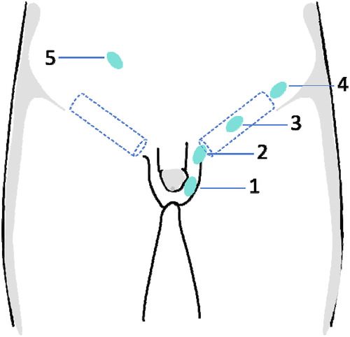
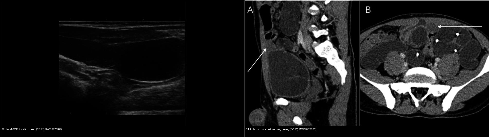
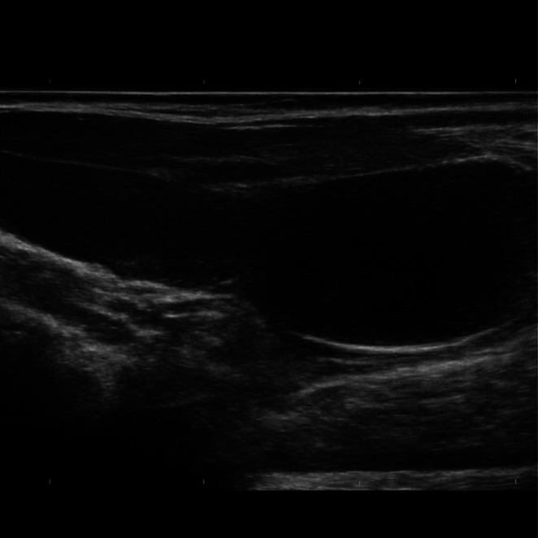
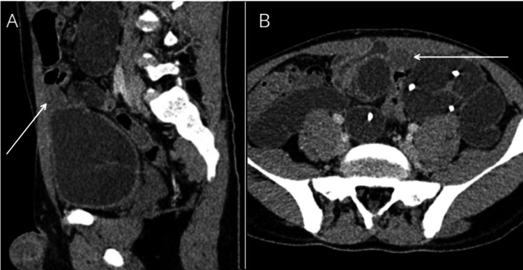
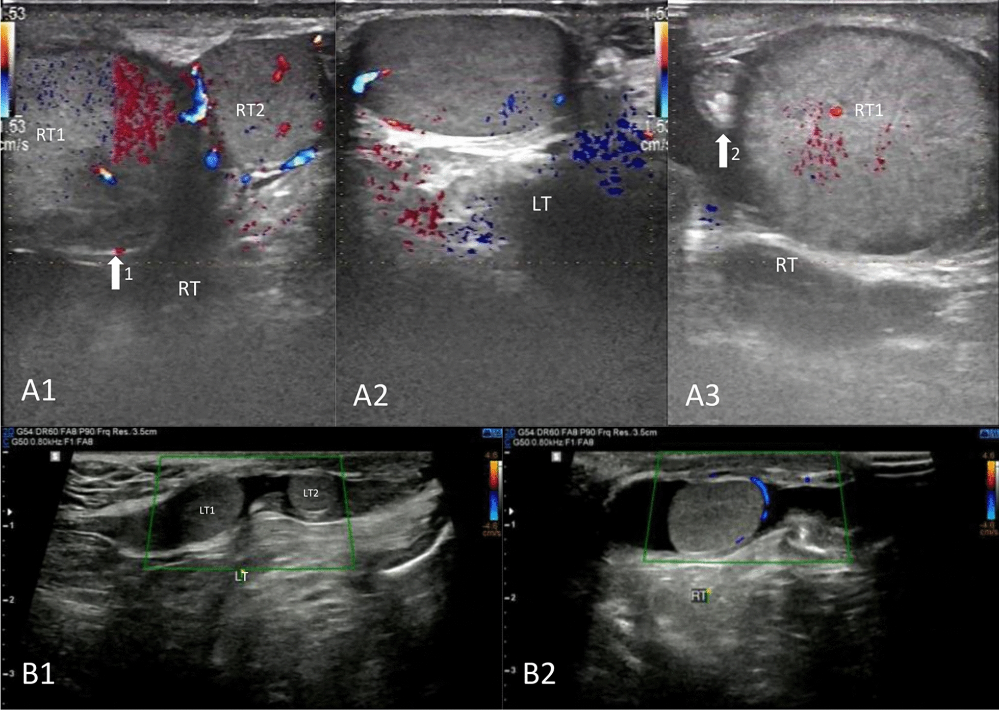
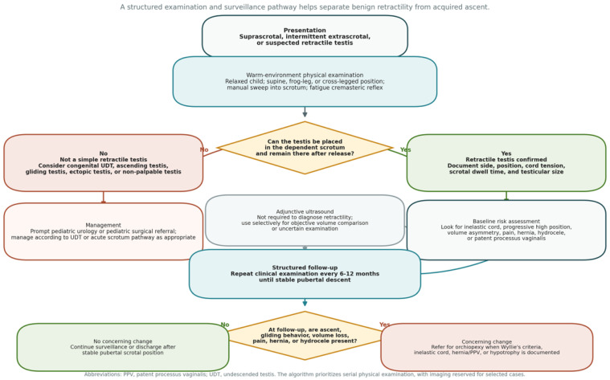

634 — Hạ tinh hoàn ẩn & tinh hoàn không sờ thấy / Cryptorchidism & the non-palpable testis
Tags: pattern:tinh-hoan-khong-xuong pattern:tinh-hoan-khong-so-thay pattern:tinh-hoan-lac-cho vung:biu-tinh-hoan-nhi vung:ben-bung protocol:sieu-am-biu protocol:MRI-chau protocol:noi-soi-o-bung
Mức chắc chắn (certainty): tổng hợp y văn (literature synthesis) — số liệu lấy từ tổng quan/cohort truy cập mở (PMC13204224, PMC13467042, PMC12929493) + 2 ca nguyên văn minh họa (PMC13479860, PMC12971379); không tự suy diễn ngoài nguồn.
Nối tiếp 638 – Khối bìu–tinh hoàn không đau và 636 – Cấp cứu niệu–sinh dục nhi (xoắn tinh hoàn). Bài này phủ nhánh tinh hoàn không xuống bìu / không sờ thấy.
1. Tổng quan bệnh học – cơ chế hình ảnh
- Hạ tinh hoàn ẩn (cryptorchidism / undescended testis – UDT): tinh hoàn dừng lại dọc đường xuống bình thường (ổ bụng → ống bẹn → bìu), có thể trong ổ bụng (intra-abdominal), trong ống bẹn (canalicular), ngoài lỗ bẹn ngoài/cạnh bìu (suprascrotal) hoặc lạc chỗ (ectopic).
- Tần suất (định lượng): ~ 1–9% trẻ trai đủ tháng lúc sinh (Đan Mạch
9% vs Phần Lan ~2,4% — dao động theo chủng tộc/môi trường), giảm còn **1% ở tuổi 1** do xuống tự phát chủ yếu trong 3–6 tháng đầu (PMC13204224). Noninguinal ectopic < 1% ca UDT. - TẠI SAO tinh hoàn không thấy được trên hình ảnh:
- Tinh hoàn là mô đặc mềm nước; trên siêu âm đầu dò cao tần nó là cấu trúc hình bầu dục đồng nhất, hồi âm trung bình, có "trung thất tinh hoàn" (mediastinum testis) hồi âm dày — dấu hiệu định vị trong ống bẹn/bìu.
- Trong ổ bụng, tinh hoàn nhỏ, teo (atrophic) và bị hơi ruột/bèo ruột che lấp → siêu âm mất độ tương phản, dương tính giả do hạch/hơi; đây là lý do siêu âm không đủ tin cậy.
- Trên MRI, tinh hoàn ổ bụng/teo hiện là cấu trúc tròn–bầu dục T1 đồng nhất trung bình, T2 tăng tín hiệu (mô giàu nước) nằm dọc đường đi của tinh hoàn — nhưng tinh hoàn teo hết (vanishing) thì không có mô đặc để thấy.
Ngưỡng định lượng bắt buộc (Argon – cửa 1)
| Đại lượng | Ngưỡng | Nguồn |
|---|---|---|
| Tần suất UDT (đủ tháng lúc sinh) | 1–9%; còn ~1% ở tuổi 1 | PMC13204224 |
| Siêu âm định vị tinh hoàn không sờ thấy | Se ~45%, Sp ~78% → không thay thế được nội soi ổ bụng | PMC13204224, PMC12929493 |
| Dương tính giả siêu âm trong hội chứng tinh hoàn thoái triển (TRS) | 27,9% (12/43) | PMC12929493 |
| Tinh hoàn đối bên phì đại bù (TRS) | 0,86 ± 0,23 mL so 0,44 ± 0,14 mL (< 24 tháng); 0,90 ± 0,44 so 0,57 ± 0,16 mL (24–60 tháng), p < 0,05 | PMC12929493 |
| Thời điểm mổ hạ tinh hoàn (orchidopexy) | trước 12 tháng, muộn nhất 18 tháng | PMC13204224 |
| Nguy cơ ung thư tinh hoàn sau mổ | Tỉ suất 5,4 nếu mổ ≥ 13 tuổi vs 2,2 nếu mổ < 13 tuổi (cohort > 16.000 nam) | PMC13204224 |
- Hệ quả nếu bỏ sót: tăng nguy cơ ung thư tế bào mầm (qua tổn thương tiền ung thư GCNIS – germ cell neoplasia in situ), vô sinh, xoắn và chấn thương tinh hoàn. Mổ sớm cải thiện sinh tinh nhưng không đưa nguy cơ ung thư về mức nền → vẫn phải theo dõi suốt đời.
2. Mẫu hình + chẩn đoán phân biệt theo vị trí (Gamut)
- Phân loại đầu tiên tại lâm sàng (quyết định cả đường đi hình ảnh): sờ thấy (palpable) vs không sờ thấy (non-palpable).
- Sờ thấy được: nằm trong ống bẹn (intracanalicular) hoặc ngay ngoài lỗ bẹn ngoài (suprascrotal); ổ bụng dưới da bẹn (superficial inguinal pouch / Dennis Browne pouch) là vị trí lạc chỗ hay gặp nhất.
- Không sờ thấy: trong ổ bụng (intra-abdominal ~5–10%), cao trong ống bẹn, thiếu/teo (vanishing/absent) — hoặc hai bên mất tinh hoàn (anorchia) và rối loạn phát triển giới (DSD).
- Ba "bệnh cảnh giả" cần loại trừ ngay (không phải UDT thật):
- Tinh hoàn di động (retractile testis): tinh hoàn đã xuống bìu nhưng bị phản xạ cơ bìu (cremasteric reflex) kéo lên; 1,2–3,9% trẻ đi học, hai bên ~1/3; không mổ — chỉ theo dõi 6–12 tháng (có thể "tăng cao" thành UDT mắc phải 2–50%) (PMC13467042).
- Tinh hoàn tăng cao mắc phải (ascending/acquired testis): trước đây bìu, nay tụt cao do dây tinh dài/chùng → chuyển sang theo dõi như UDT.
- Tinh hoàn thoái triển (testicular regression syndrome – TRS / vanishing testis): teo từ trong bào thai; siêu âm kém tin cậy (dương tính giả 27,9%).
- Lạc chỗ ectopic: bìu dưới da, vùng bẹn, đùi, đáy chậu, trước xương mu, bìu đối bên (hiếm nhất).

Sơ đồ 5 vị trí: 1 bìu bình thường · 2 cạnh bìu (suprascrotal) · 3 trong ống bẹn · 4 lỗ bẹn trong · 5 ổ bụng. Nguồn: Xu Q et al., Front Pediatr 2026 (PMC13345882), CC BY 4.0.3. Bảng so sánh phân biệt (ma trận đối chiếu)
| Thực thể (entity) | Hình ảnh điển hình (US/CT/MRI) | Chốt vào (rule-in) | Chốt loại (rule-out) | Gợi ý xác nhận |
|---|---|---|---|---|
| Tinh hoàn di động (retractile) | Tinh hoàn nằm bìu khi khám trong phòng ấm/nằm, bị kéo lên khi lạnh/căng bụng; US hai bìu đối xứng | Xuống bìu tự phát khi thư giãn/thủ thuật Valsalva (+); kích thước bình thường | Tinh hoàn không bao giờ ở bìu (ghi nhận kéo dài) → UDT thật | Khám lại 6–12 tháng; không chỉ định mổ |
| Hạ tinh hoàn ẩn trong ống bẹn (palpable canalicular) | US đầu dò thẳng cao tần: bầu dục đồng nhất có mediastinum testis trong ống bẹn; có mạch trên Doppler | Sờ được + US thấy trong ống bẹn/ngoài lỗ bẹn ngoài | Thấy trong bìu → không phải UDT | Mổ inguinal orchidopexy (6–18 tháng) |
| Tinh hoàn trong ổ bụng (intra-abdominal, không sờ thấy) | US thường âm tính/không tin cậy (Se 45%); MRI T2 tăng tín hiệu dọc đường đi; CT ít dùng vì tia xạ | MRI/nội soi ổ bụng thấy tinh hoàn ổ bụng + mạch tinh (vas deferens) đi tới | Thấy dây tinh hoàn cụt (blind-ending vas) + không có mô tinh hoàn → TRS/thiếu | Nội soi ổ bụng = tiêu chuẩn (~100%) |
| Tinh hoàn thoái triển (vanishing/TRS) | US dương tính giả 27,9% (đọc nhầm hạch/mô xơ là tinh hoàn); tinh hoàn đối bên phì đại bù, ưu thế trái 74,4% | Nội soi: dây tinh cụt + mô xơ/hạt hemosiderin; đối bên to bù | Có mô tinh hoàn đặc → không phải TRS | Mô bệnh (hemosiderin, vôi hóa nhỏ) |
| Tinh hoàn lạc chỗ (ectopic) | Khối mô mềm ngoài ống bẹn (dưới da bẹn, đùi, đáy chậu, trước xương mu); MRI dễ thấy | Ngoài đường đi bình thường + không nằm bìu | Nằm đúng đường ống bẹn → UDT thường | Mổ nếu phù hợp |
| Nhiều tinh hoàn (polyorchidism — hiếm, ~86% trong bìu) | US/MRI thấy thêm tinh hoàn (thường trong bìu); có thể kèm UDT cùng bên | Thấy ≥ 3 tinh hoàn, có mô học tinh hoàn lành | Một cấu trúc không có mô tinh hoàn → hạch/u | MRI để xác nhận vị trí trước mổ |

Trái: siêu âm vùng bẹn trái — KHÔNG thấy tinh hoàn trong bìu/ống bẹn. Phải: CT — tinh hoàn lạc chỗ trên bàng quang (khối mô mềm bầu dục). Nguồn: Javaid MH et al., Clin Case Rep 2026 (PMC12971379, CC BY 4.0) + Bounouar O et al., Cureus 2026 (PMC13479860, CC BY 4.0); ảnh ghép letterbox.4. Protocol chụp + hệ phân độ/điểm + flowchart
- Siêu âm (đầu tay khi tinh hoàn sờ thấy hoặc không sờ thấy): đầu dò thẳng 7,5–15 MHz, phòng ấm, gel ấm; khám ở tư thế nằm rồi đứng/ngồi xổm (bộc lộ tinh hoàn di động); quét dọc ống bẹn, vùng bẹn, đáy chậu, đùi; đo kích thước, mô tả mediastinum testis; Doppler màu/năng lượng so sánh hai bên.
- Giới hạn cốt lõi: với tinh hoàn không sờ thấy Se chỉ ~45%, Sp ~78% → không dùng để loại trừ.
- MRI (khi không sờ thấy, ổn định, cân nhắc trước nội soi): T1 + T2 (fat-sat) + DWI, theo đường đi; thấy tinh hoàn teo/ổ bụng. Không dùng thường quy ở trẻ nhỏ (cần gây mê).
- Không khuyến cáo CT (tia xạ) và không khuyến cáo hCG/GnRH điều trị hạ tinh hoàn (hiệu quả 6–35%, dưới 20–30%) (PMC13204224).
- Nội soi ổ bụng (laparoscopy): tiêu chuẩn vàng định vị tinh hoàn ổ bụng/khẳng định thiếu (gần 100%); thấy dây tinh hoàn cụt = thiếu/TRS.
- Thời điểm & theo dõi: xuống tự phát có thể trong 3–6 tháng; chuyển chuyên khoa trước 6 tháng; mổ hạ tinh hoàn trước 12 tháng, muộn nhất 18 tháng. Nếu hai bên không sờ thấy → tầm soát DSD (karyotype, testosterone/gonadotropin/MIS, ± hCG test).
flowchart TD
A[Trẻ trai nghi hạ tinh hoàn ẩn] --> B{Tinh hoàn SỜ THẤY?}
B -->|Không, và không ở bìu| C{Thấy ở vị trí bất thường khi khám/ấm?}
B -->|Có| D[UDT sờ thấy: US xác nhận + orchidopexy 6-18 tháng]
C -->|Di động xuống bìu khi ấm| E[Tinh hoàn di động: theo dõi 6-12 tháng, KHÔNG mổ]
C -->|Không bao giờ vào bìu| F[Bilateral?]
F -->|Hai bên| G[Tầm soát DSD: karyotype, hormone, ± hCG]
F -->|Một bên| H[Siêu âm định vị - độ tin cậy thấp]
H --> I{Không thấy?}
I -->|Không thấy| J[Nội soi ổ bụng: tinh hoàn ổ bụng / dây cụt = TRS]
I -->|Thấy| K["MRI xác nhận (nếu cần) trước orchidopexy"]
J --> L{Tinh hoàn ổ bụng còn sống?}
L -->|Còn| M[Orchidopexy 1 thì / 2 thì]
L -->|Co cụt/teo| N[Chỉ cắt mô xơ + theo dõi]
5. Biến thể bình thường và cạm bẫy
- Tinh hoàn di động (retractile) là cạm bẫy số 1 — dễ bị "mổ oan": phải khám lại trong phòng ấm, tư thế nằm + ngồi xổm, ghi rõ "đã từng thấy xuống bìu hay chưa". Không bao giờ đọc là UDT nếu tinh hoàn xuống bìu được.
- "Peeping testis" (tinh hoàn thập thò): tinh hoàn lên xuống ở lỗ bẹn ngoài, làm khó phân biệt hạ tinh hoàn thật — xem xu hướng theo thời gian.
- Hạch bẹn (lymph node) bị đọc nhầm là tinh hoàn: hạch có rốn mỡ hồi âm dày + không có trung thất tinh hoàn; tinh hoàn có mạch/ngoại vi trên Doppler.
- Hơi/đám quai ruột trong ổ bụng che lấp tinh hoàn trên siêu âm → không loại trừ; đừng kết luận "không có tinh hoàn" từ siêu âm.
- Tinh hoàn teo nhỏ (vanishing) có thể "biến mất" hoàn toàn; siêu âm dương tính giả 27,9% → cần nội soi/mô bệnh.
- Chấn thương/xoắn tinh hoàn ổ bụng (intra-abdominal torsion) có thể giả bệnh cảnh viêm ruột thừa/cấp bụng — nếu tinh hoàn không xuống bìu, đau bụng cấp cần nghĩ xoắn tinh hoàn ổ bụng (nối 636).
- Cạm bẫy tia xạ: trẻ nhỏ không dùng CT bụng để tìm tinh hoàn không sờ thấy (ALARA) khi MRI/nội soi thay thế được.
6. Tự lượng giá — Blind Quiz (Blind Quiz)
Ca 1 — Bé trai, không sờ thấy tinh hoàn trái; siêu âm vùng bẹn/bìu trái (hình bên trái của ảnh ghép).

- Gợi ý lâm sàng: trẻ có khối/u vùng bẹn trái, không sờ thấy tinh hoàn trái.
- Hỏi: Siêu âm thấy gì ở bìu trái? Có loại trừ được hạ tinh hoàn ẩn không? Bước tiếp theo?
Bấm để hiện đáp án (findings + chẩn đoán)
- Findings: vùng bẹn trái/bìu không định vị được tinh hoàn trong bìu.
- Chẩn đoán: tinh hoàn không xuống bìu (không sờ thấy) ± thành phần khối kèm — siêu âm không loại trừ được tinh hoàn ổ bụng/teo (Se ~45%). Bước tiếp: nội soi ổ bụng (tiêu chuẩn vàng), cân nhắc MRI.
- Nguồn ảnh: Javaid MH et al., Clinical Case Reports 2026 (PMC12971379), CC BY 4.0.
Ca 2 — Bé trai 4 tuổi, không sờ thấy tinh hoàn trái; CT bụng (xem ảnh bên phải của ảnh ghép).

- Gợi ý: đau bụng cấp, không sờ thấy tinh hoàn trái.
- Hỏi: Khối mô mềm nằm đâu? Chẩn đoán? Vì sao cần nghĩ tới xoắn?
Bấm để hiện đáp án (findings + chẩn đoán)
- Findings: khối mô mềm hình bầu dục nằm trên và trước bàng quang (supravesical) — phù hợp tinh hoàn lạc chỗ ổ bụng.
- Chẩn đoán: tinh hoàn ổ bụng lạc chỗ (intra-abdominal ectopic testis), ca nguyên văn có xoắn tinh hoàn ổ bụng — vì tinh hoàn ổ bụng dễ xoắn (dây treo dài, không cố định) và có thể giả bệnh cảnh cấp bụng.
- Nguồn ảnh: Bounouar O et al., Cureus 2026 (PMC13479860), CC BY 4.0.
- Phản biện: CT dùng trong ca nguyên văn này; ở thực hành nhi khoa hạn chế CT — ưu tiên siêu âm/MRI/nội soi.
Ca 3 — Bé trai 8 tuổi, vùng bẹn phải có "khối" nhưng bìu phải rỗng.

- Hỏi: Có mấy tinh hoàn quan sát trên siêu âm? Vị trí? Chẩn đoán phân biệt?
Bấm để hiện đáp án (findings + chẩn đoán)
- Findings: nhiều cấu trúc tinh hoàn (polyorchidism) — tinh hoàn phải có hai tinh hoàn, cấu trúc phía trên to và lệch vị trí trong ống bẹn, kèm hạ tinh hoàn ẩn bẹn cùng bên; ổ trên còn xoắn.
- Chẩn đoán: polyorchidism + hạ tinh hoàn ẩn ống bẹn (có xoắn) — ca nguyên văn (Fang H et al., Eur J Med Res 2026).
- Nguồn ảnh: Fang H et al., 2026 (PMC12924418), CC BY-NC-ND — giữ nguyên bản, không crop/ghép.
- Phản biện: polyorchidism rất hiếm (86% trong bìu); không được nhầm với hạch/u, vì quyết định mổ bảo tồn khác hẳn.
Ca 4 — Thuật toán tiếp cận tinh hoàn di động (không cần hình bệnh học).

- Hỏi: Tinh hoàn "lúc có lúc không" ở bìu nên xử trí thế nào? Khi nào chuyển sang mổ?
Bấm để hiện đáp án (findings + chẩn đoán)
- Findings: tinh hoàn xuống bìu được khi khám trong phòng ấm/nằm, không xuống khi lạnh/căng bụng.
- Chẩn đoán: tinh hoàn di động (retractile testis) — KHÔNG mổ; theo dõi 6–12 tháng; mổ chỉ khi tinh hoàn không xuống đều / teo / "tăng cao" thành UDT mắc phải (2–50%).
- Nguồn ảnh: Florou M et al., J Clin Med 2026 (PMC13467042), CC BY.
Bài liên quan chéo
- 600 – Tổng quan Hệ Nhi khoa
- 636 – Cấp cứu niệu–sinh dục nhi (chấn thương thận & xoắn tinh hoàn)
- 638 – Khối bìu–tinh hoàn không đau ở trẻ (u tế bào mầm, nang biểu bì, varicocele)
- 635 – Dị tật hệ tiết niệu nhi (SFU/VUR/PUV)
- 639 – Khối thận đặc ở trẻ (Wilms/CMN/RCC)
Không dùng để chẩn đoán độc lập khi chưa có người hướng dẫn.